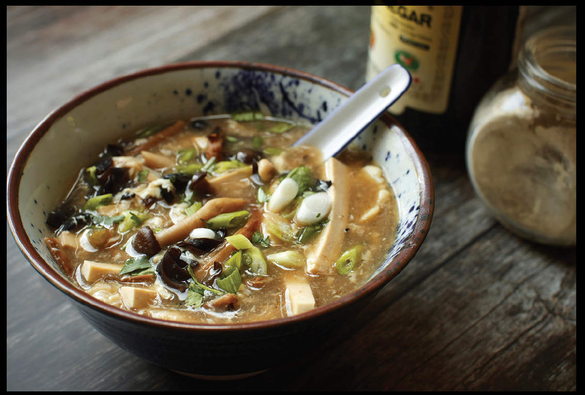

HOT AND SOUR SOUP
Hot and sour soup and I have the kind of relationship that they make movies about. Movies of the kind Adri enjoys watching on plane rides, with fine, soft-spoken British actors and plots that chronicle tender, tragic relationships.
We first met in the flesh at a roadside Chinese restaurant in New Jersey when I was six years old. Sure, I’d caught glimpses of it in the past, inhaled its heady aroma as it was whisked by on the arm of a waiter. It had a previous engagement with the charlatan at table 12, see, but I was intoxicated by its delicate spicy perfume nonetheless. I’d been working up the courage for years to ask for it, afraid that, if I turned my back on the precious wonton soup that I’d loved since before I could remember, I’d risk losing both of them and I’d be stuck like a sucker sipping on egg drop forever.
I must say: it wasn’t love at first sip. Slick and thick with cornstarch, the stuff I was served was tasty, but the pungent vinegar and white pepper hit took getting used to for a six-year-old. There was a period when I was around eight years old when my parents made the version in the Joyce Chen Cook Book once a month or so. I distinctly remember picking the hard nubs off the soaked wood ear mushrooms that went into it, and the debates we had over whether the herb—not commonly found in New York supermarkets in the 1980s—was called “cilantro” or “coriander.”
Since then, my love for it has only grown. The dish is popular in both Beijing (where it’s made with white pepper and black vinegar) and Sichuan (where it gets its heat from dried chiles), and I’ve had excellent renditions in both, but really, the version I love most is the one you find at old-school New York Cantonese restaurants. The kind that’s dark and vinegary, packed with white pepper, thickened to a mouth-coating texture with cornstarch, with strips of firm tofu, pork, daylily buds, wood ear mushrooms, and drizzled with eggs. The advantage of making it at home is that while usually the soup you get at those restaurants has been sitting in a warming tray all afternoon, when it’s homemade, it stays fresh.
In the past, I’ve eschewed the stir-frying step that some recipes (such as Fuchsia Dunlop’s) recommend for developing flavor before adding the broth. I’ve more recently come around to it, as it’s relatively easy and is especially useful if you like extra mushrooms in your hot and sour soup (which I do!).
Thickening with cornstarch is, by the way, not without controversy. In some Chinese traditions, hot and sour soup is thickened (with blood from either a chicken or a pig). In others, it’s served thin. I like what I grew up with, however, so I add the cornstarch.
The real key: add in that pepper and vinegar right before serving. They lose aroma fast. In fact, for good measure, it’s a wise idea to have a bit at the table so your guests can season their bowls as desired. That fresh white pepper and vinegar hit? That’s the difference between the hot and sour soup that’s good enough to keep you satisfied in your own company at home and the hot and sour soup that’s so good you absolutely must take it home to meet the parents.
It’s the hot and sour soup I fell in love with, but I’m not so selfish I wouldn’t share it with you all.
|
Yield Serves 6 |
Active Time 30 minutes Total Time 1 hour and 45 minutes |
If you don’t have any Everyday Chicken and Ginger Stock on hand, start with 1½ quarts (1.5 l) of store-bought low-sodium chicken stock and simmer it for 15 minutes with 4 scallions, a few slices of ginger, a teaspoon of white peppercorns, and, optionally, a ham bone before straining it and proceeding as directed. Wood ear mushroom is also sold as “black fungus” and can be found at Asian markets or online, along with dried daylilies. Chinkiang vinegar is also sold as Zhenjiang vinegar in Asian markets. If unavailable, substitute black vinegar or balsamic vinegar.
INGREDIENTS
The Dry Ingredients (see Notes):
¼ cup (¼ ounce/8 g) dried Chinese wood ear mushrooms
¼ cup (¼ ounce/8 g) dried daylily buds
For the Stir-Fry:
1 tablespoon (15 ml) peanut, rice bran, or other neutral oil
4 ounces (120 g) fresh mushrooms, such as thinly sliced shiitake or button or whole trimmed beech mushrooms
6 ounces (170 g) trimmed boneless pork shoulder or loin, cut into 2-inch-long slivers (optional)
2 tablespoons (30 ml) Shaoxing wine
To Finish:
1½ quarts (1.5 l) Everyday Chicken and Ginger Stock (here; see Notes)
6 ounces extra-firm tofu, cut into thin matchsticks
4 tablespoons (30 g) plus 1 teaspoon (2.5 g) cornstarch
2 large eggs
To Serve:
Kosher salt
1½ teaspoons (5 g) freshly ground white pepper, plus more to taste
¼ cup (60 ml) Chinkiang or black vinegar, plus more to taste (see Notes)
1 teaspoon (5 ml) roasted sesame oil, plus more to taste
2 scallions, chopped
Small handful of roughly chopped fresh cilantro leaves and fine stems
DIRECTIONS
1 Rehydrate the Dried Ingredients: Place the wood ears and daylily buds in a large bowl or measuring cup large enough for them to expand about fourfold. Cover with very hot water and set aside until rehydrated, about 15 minutes. Drain thoroughly. Remove the tough centers from the wood ears, then thinly slice them. Cut the daylilies into 2-inch pieces.
2 For the Stir-Fry: Heat a wok over high heat until lightly smoking. Add the oil and swirl to coat. Add the fresh mushrooms and stir-fry until lightly browned around the edges, 2 to 3 minutes. Add the pork (if using) and continue to stir-fry until no longer pink, about 1 minute. Add the wood ears and daylily bulbs and stir-fry briefly to drive off excess moisture. Add the wine by pouring it around the edges of the wok and toss to combine.
3 To Finish: Add the stock and tofu and bring to a simmer. Combine 4 tablespoons (30 g) of the cornstarch with 4 tablespoons (60 ml) water in a small bowl and mix with a fork until homogenous. Drizzle into the broth and return to a bare simmer. The broth should thicken.
4 Whisk together the eggs, a pinch of salt, and the remaining teaspoon (2.5 g) of cornstarch in a small bowl until homogenous. Swirl the soup once with a large spoon or ladle, then, holding a pair of chopsticks or the tines of a fork on the edge of the bowl, slowly drizzle the egg mixture into the soup, shaking the fork or chopsticks back and forth rapidly to flick the egg mixture as it drizzles. Allow the soup to sit for 15 seconds, then stir gently to break up the egg to the desired size.
5 To Serve: Just before serving, season with salt to taste and stir in the white pepper and vinegar. Drizzle with the sesame oil and sprinkle with the scallions and cilantro. Serve immediately, passing more white pepper, vinegar, and sesame oil at the table to adjust to taste.
